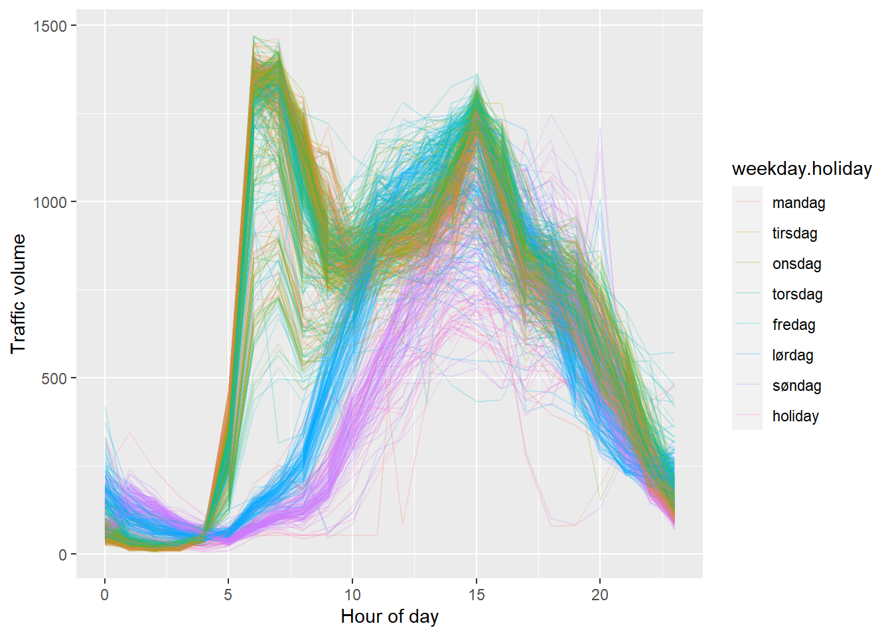

library(ggplot2) # For plotting
library(tidyr) # For pivot_longer() and pivot_wider()
library(readr) # For reading csv
library(dplyr) # For pipe etc.
temps <- read_csv("data-temps.csv")
long <-
temps %>%
pivot_longer(cols = -machine,
names_to = "when",
values_to = "temperature")
long %>% pivot_wider(id_cols = machine,
names_from = when,
values_from = temperature)
ggplot(long, aes(x = machine, y = temperature)) +
geom_point()
# Color based on a variable (map a variable to color)
ggplot(long, aes(x = machine, y = temperature, colour = when)) +
geom_point()3 Graphics
We will next explore the rich posibilities for making convincing visualizations in R; in particular using the ggplot2-package. We will start from the very basic syntax of making a plot, and then work our way towards making publication ready illustrations.
There are a lot of online resources for ggplot2, for example:
- The official online reference.
- Data Visualization: A Practical Introduction, a well written free and online e-book.
- The
ggplot2cheat sheet; which is a superb quick-reference. - Twenty rules for good graphics, a useful blog post by statistician Rob Hyndman.
- The books by Edward Tufte are classic works in the more general topic of data visualization.
3.1 Introduction to ggplot2
We introduce the ggplot2-package and look at the basic syntax of that package and how it differs from the plotting engine that is built into the basic installation of R. Make sure that you have installed this package (using install.package("ggplot2")) before proceeding to the rest of the lesson.
We can repeat the links that are mentioned at the end of the video:
- The official online reference.
- Data Visualization: A Practical Introduction, a well written free and online e-book.
- The
ggplot2cheat sheet; which is a superb quick-reference.
3.2 Wide or long? (#wideorlong)
Not only is ggplot2 picky in the sense that it only accepts data frames as the first argument to the ggplot()-function, we also need to be careful about the “shape” of the data frame. In this video we discuss the difference between storing data in the “wide” format versus the “long” format. We always prefer the latter when doing data science, in particular when using ggplot2 for creating visualizations.
The basic principle for the long format (which is discussed in length by Hadley Wickham, chief data scientist at RStudio and master mind of the tidyverse, in his article Tidy Data) is the following:
One observation is one row, one variable is one column.
Here you can download the data set for this lesson: data-temps.csv.
3.3 Introducing the data
We load the data that we are going to use in the lessons to follow. We look at hourly traffic volume over the Sotra bridge during 2017 and 2018. This bridge is particularly vulnerable to traffic jams during rush hour, which we will look at in more detail through visualizations using ggplot2.
You can download the data here: data-sotra.Rdata. Make sure that you have set the correct working directory and loaded the data set into R before proceeding to the next lesson.
load("data-sotra.Rdata")
head(traffic.df)
tail(traffic.df)3.4 One variable
We look at some basic plots for visualizing a single variable. First, we make a histogram and a density plot for the continuous variable hourly.volume, and then we look at two different ways to make bar plots for a categorical variable, using geom_bar() and geom_col(). In the first of these cases we provide ggplot() with the raw data set, so that the occurrences in the categorical variable has to be counted before being presented in the plot. In the second case we provide the counts directly, which is something that easily happens in practice.
We also consider the practical problem of sorting the bars in the plot according to their size. We did that by modifying the data directly using the fct_reorder()-function that can be found in the forcats package.
# Histogram
ggplot(df.traffic, aes(x = hourly.volume)) +
geom_histogram(bins = 100)
# Density plot
ggplot(df.traffic, aes(x = hourly.volume)) +
geom_density()
# Bar plot for raw data, ggplot does the counting
ggplot(df.traffic, aes(x = weekday.holiday)) +
geom_bar()
# Bar plot for finished counts.
# (group_by() and summarise() are used to simulate that situation)
df.traffic %>%
group_by(weekday.holiday) %>%
summarize(count = n()) %>%
ggplot(aes(x = weekday.holiday, y = count)) +
geom_col()
# # Ordering the bars by size
df.traffic %>%
group_by(weekday.holiday) %>%
summarize(count = n()) %>%
mutate(weekday.holiday = fct_reorder(weekday.holiday, count)) %>%
ggplot(aes(x = weekday.holiday, y = count)) +
geom_col()Exercise:
Investigate the possibility of making the following modifications to the last bar plot that we made:
- Flip the coordinate system so that the bars become horizontal.
- Reverse the order of the bars, so that the tallest (or now: longest) bar comes first.
3.5 Two variables
We move on to look at a couple of alternatives when visualizing two variables. The first one is the scatter plot (using geom_point()) with some useful options, and the second one is to add text labels to a plot.
In the latter example we see how we can add information from different data frames in the same plot, and also that we can update the aesthetic mapping on later layers if we need to do that.
Again, the cheat sheet reveals that we are barely scratching the surface, there are many more geom_*()-functions that we can use to create just about any plot that you can imagine!
# The basic scatterplot with alpha and smoother
df.traffic %>%
filter(hourly.volume != 0) %>%
ggplot(aes(x = hour, y = hourly.volume)) +
geom_point(alpha = .05) +
geom_smooth()
# A data frame containing the information required to plot text labels on top of
# the bars
text_labels <-
df.traffic %>%
group_by(weekday.holiday) %>%
summarize(count = n()) %>%
mutate(label = paste(count, "days"))
# The final plot with text labels
ggplot(df.traffic, aes(x = weekday.holiday)) +
geom_bar() +
ylim(c(0, 3000)) +
geom_text(aes(x = weekday.holiday, y = count, label = label),
data = text_labels,
nudge_y = 130,
size = 3)3.6 Scales and axes
Creating plots and graphs for various purposes takes more time than you think, not in the least because you may want to tweak all the small details so that it looks just perfect. The ggplot2-package (as well as various add-on packages) contain all the tools you will ever need for this (and many more). In this video we look at some ways to work with this. The most important thing in this lesson is perhaps not the functions that we use, but rather the process we follow when solving the problem using a combination of documentation, googling, trial and error.
df.traffic %>%
tail(n = 500) %>%
ggplot(aes(x = from.time, y = hourly.volume)) +
geom_line() +
xlab("Time") +
ylab("Hourly volume") +
scale_x_datetime(date_breaks = "1 day",
labels = function(x) format(x, "%d.%m")) +
theme(axis.text.x = element_text(size = 5))Exercise: Filter out the last 24 hours instead, and make one tick mark for each hour showing the time on a date + 24 hour format (i.e 31.12.2018 12:00, 31.12.2018 13:00, etc). Make adjustments that make the labels readable. Also, add points for each observation
Hint 1: look at the options we deleted when adjusting the size of the labels.
Hint 2: Look at this blog post for more options when formatting date strings.
3.7 Visualizing groups
It is important in many situations to be able to visualize group membership, and in this lesson we see two such princinples: using colour in a single plot by mapping the group membership variable to the colour dimension of the plot, and one where we use facet_wrap() in order to make one panel for each group.
# Using colour
df.traffic %>%
filter(hourly.volume != 0) %>%
ggplot(aes(x = hour, y = hourly.volume, colour = weekday.holiday)) +
geom_point(alpha = .05) +
geom_smooth()
# Using facet_wrap
df.traffic %>%
filter(hourly.volume != 0) %>%
mutate(weekday.holiday = recode(.$weekday.holiday,
mandag = "Monday",
tirsdag = "Tuesday")) %>%
ggplot(aes(x = hour, y = hourly.volume)) +
geom_point(alpha = .05) +
geom_smooth() +
facet_wrap(~ weekday.holiday) +
xlab("Hour of day") +
ylab("Traffic volume")Exercise:
Let us make a different plot now. We want to make one line plot per day, and colour them by which day it is. Try to make the following plot.
- Obviously we must use
geom_line()instead ofgeom_point() - One problem is to get one line per day. In order to do that you need a variable that uniquely identifies the date of the day (which we have), and a way to map that variable to the group dimension of the plot. See if you find something useful under the headline Aesthetics in the help file for
geom_line().

3.8 Final adjustments
We look at some options for making final adjustments to your plot in order to make them publication ready, including the possibility of including several plots to the same canvas by means of the patchwork-package.
You can find the blog post about the mmtable2-package here.
# Store the three plots under separate variable names
p1 <-
df.traffic %>%
mutate(weekday.holiday = recode(.$weekday.holiday,
mandag = "Monday",
tirsdag = "Tuesday")) %>%
filter(hourly.volume != 0) %>%
ggplot(aes(x = hour, y = hourly.volume, colour = weekday.holiday)) +
geom_point(alpha = .05) +
xlab("Hour of day") +
ylab("Traffic volume") +
labs(colour = "Weekday") +
theme_classic() +
theme(legend.position = "none")
p2 <- df.traffic %>%
tail(n = 500) %>%
ggplot(aes(x = from.time, y = hourly.volume)) +
geom_line() +
xlab("Time") +
ylab("Hourly volume") +
scale_x_datetime(date_breaks = "1 day",
labels = function(x) format(x, "%d.%m")) +
theme(axis.text.x = element_text(size = 5))
p3 <- ggplot(df.traffic, aes(x = weekday.holiday)) +
geom_bar() +
ylim(c(0, 3000)) +
geom_text(aes(x = weekday.holiday, y = count, label = label),
data = text_labels,
nudge_y = 130,
size = 3)
# Assemble using the patchwork-package
library(patchwork)
(p1 + p2)/p3